فصل هشتم — خوشهبندی: کشف ساختار، الگوریتمها و اعتبارسنجی#
درس دادهکاوی، کارشناسی ارشد مهندسی کامپیوتر
پرسش محوری: اگر هیچ برچسبی برای مشتریان یا رخدادها نداشته باشیم، چه زمانی حق داریم بگوییم در داده «گروه» کشف کردهایم؟ آیا گروههایی که یک الگوریتم نشان میدهد واقعاً در داده وجود دارند، یا نتیجهٔ انتخاب فاصله، مقیاس و پارامترهای خود ما هستند؟
فایلهای آموزشی: جزوهٔ PDF فصل هشتم · سورس XeLaTeX و شکلها · کد Python · Notebook اجرایی · دادهٔ ساختگی · خروجیهای عددی قابل بازتولید. هیچ دادهٔ واقعی مشتری و هیچ اطلاعات حساس در این بسته وجود ندارد.
اهداف یادگیری و جایگاه فصل#
در فصل هفتم برای پیشبینی برچسبِ یک مشاهده، از مثالهای برچسبدار استفاده کردیم. این بار برچسب هدفی در اختیار نداریم. فقط میخواهیم بدانیم آیا نمونهها در بازنمایی انتخابشده، ساختار قابل دفاعی دارند. پس از این فصل باید بتوانید: (۱) تفاوت دستهبندی با و بدون برچسب را توضیح دهید؛ (۲) تمایز خوشههای فشرده، متصل و چگال را درک کنید؛ (۳) یک تکرار k-means و مقدار SSE را دستی حساب کنید؛ (۴) تفاوت مرکز، میانه و نمایندهٔ واقعی را بیان کنید؛ (۵) یک دندروگرام را از فاصلهٔ پیوند بسازید؛ (۶) نقاط هسته، مرزی و نویز DBSCAN را با شمارش همسایه تشخیص دهید؛ (۷) Silhouette و شاخصهای اعتبار را با مفروضاتشان تفسیر کنید؛ (۸) بین انتخاب پارامتر، ارزیابی نهایی و تفسیر خوشهها مرز بگذارید؛ و (۹) از کشف خوشه در دادهٔ فاقد ساختار طبیعی پرهیز کنید.

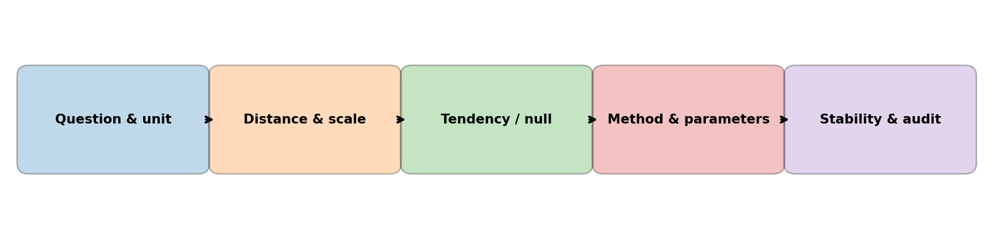
Fig. 109 شکل ۸ـ۱. زنجیرهٔ تصمیم علمی در خوشهبندی: ابتدا مسئله و واحد مشاهده، سپس هندسه، تمایل به خوشهبندی، الگوریتم و در نهایت ممیزی نتیجه.#
ارتباط دقیق با دو مرجع#
Han, Pei & Tong، ویرایش چهارم: فصل ۸، بخشهای ۸٫۱ تا ۸٫۵، صفحات چاپی ۳۷۹ تا ۴۲۴؛ شامل مفهوم خوشه، روشهای افرازی، سلسلهمراتبی و چگالیمحور و ارزیابی. Tan, Steinbach, Karpatne & Kumar، ویرایش دوم: فصل ۷، بخشهای ۷٫۱ تا ۷٫۵، صفحات چاپی ۵۲۵ تا ۵۹۶؛ شامل انواع تعریف خوشه، k-means، خوشهبندی تجمیعی، DBSCAN، اعتبار داخلی و خارجی و تمایل به خوشهبندی. تأکید Han بر خانوادهٔ الگوریتمها و مقیاسپذیری، و تأکید Tan بر معنای انواع خوشه و دامهای ارزیابی، در این فصل با هم ترکیب شدهاند. مثالهای عددی و ۲۱ شکل این فصل تألیفی هستند، نه بازنشر شکلهای کتاب. مدلهای مخلوط، خوشهبندی طیفی، زیرفضایی، فازی و شبکهای موضوع فصل نهم خواهند بود.
۸ـ۱. مسئلهٔ آغازین: بخشبندی مشتری یا تحمیل سه دسته؟#
فرض کنید یک فروشگاه برای هر مشتری دو شاخص ساخته است: x1 (میانگین تعداد مراجعه در یک بازه) و x2 (یک شاخص مقیاسشدهٔ شدت خرید). مدیر میخواهد برای طراحی برنامهٔ خدمترسانی، الگوهای رفتاری را بشناسد. در دادهٔ واقعی، هیچ ستونی با عنوان «نوع مشتری» نداریم. حتی اگر یک نرمافزار عدد سه را بهعنوان تعداد گروه از ما بگیرد و سه رنگ رسم کند، هنوز معلوم نیست سه الگوی معنادار کشف شدهاند.
در بستهٔ فصل، برای آموزش سه مجموعهٔ کاملاً ساختگی ساختهایم: compact (سه گروه فشرده و چند نقطهٔ بیرونی)، moons (دو ساختار هلالی و نویز تزریقشده) و uniform (نمونهگیری یکنواخت بدون گروههای تعبیهشده). ستون synthetic_group فقط برای کنترلِ پس از آزمایش است؛ در هیچ مرحلهای ورودی الگوریتم نیست. این جداسازی برای آن است که دانشجو ببیند داشتن «واقعیت آزمایشگاهیِ ساختگی» با داشتن «برچسب در مسئلهٔ واقعی» یکسان نیست.

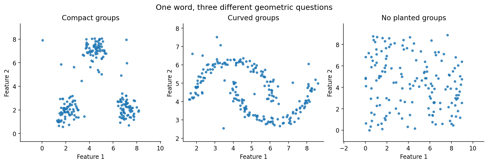
Fig. 110 شکل ۸ـ۲. سه هندسهٔ متفاوت: خوشههای فشرده، شکلهای خمیده و ابر نقطهای یکنواخت. یک روش واحد ضرورتاً برای هر سه مناسب نیست.#
سؤال نخست علمی: «شباهت» در این مسئله به چه معناست؟ اگر x1 برحسب تعداد و x2 برحسب ریال اندازهگیری شود، فاصلهٔ اقلیدسیِ خام تحت تسلط ریال قرار میگیرد. بنابراین انتخاب خوشهبند پیش از تعریف ویژگی، واحد و فاصله بیمعناست؛ این همان پیوند مستقیم با فصلهای دوم، سوم و چهارم است.
۸ـ۲. خوشه چیست؟ یک جواب واحد وجود ندارد#
سه تصور رایج از خوشه را جدا کنید. در تصور مرکز-محور، نمونههای هر گروه به یک مرکز نزدیکاند؛ در تصور اتصال-محور، نمونهها با زنجیرهای از همسایگیها به هم میرسند؛ در تصور چگالی-محور، گروه ناحیهای متصل و پرچگال است که از فضای کمتراکم جدا میشود. یک مجموعهٔ هلالی ممکن است مرکز واحد مناسبی نداشته باشد، ولی ناحیهای چگال و متصل باشد.

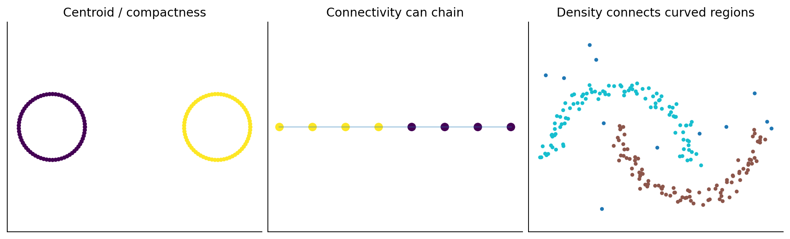
Fig. 111 شکل ۸ـ۳. یک خوشه میتواند به معنی فشردگی حول مرکز، اتصال از راه همسایهها یا اتصالِ نواحی چگال باشد؛ این سه تعریف همارز نیستند.#
افزون بر آن، خوشهبندی میتواند افرازی باشد (هر مشاهده در یک گروه)، سلسلهمراتبی باشد (گروههای تو در تو بسازد)، یا دارای نویز باشد (برخی نمونهها را به هیچ خوشهای نسبت ندهد). برچسبهای عددی 0، 1 و 2 در خروجی صرفاً شناسهٔ گروهاند؛ نه رتبه، نه کیفیت، نه نامِ واقعی مشتری.
۸ـ۳. صورتبندی: از داده به یک افراز#
ماتریس داده را به شکل \(X\in\mathbb{R}^{n\times d}\) با \(n\) مشاهده و \(d\) ویژگی در نظر بگیرید. یک الگوریتم افرازی به هر مشاهده یک شناسهٔ \(z_i\in\{1,\ldots,k\}\) میدهد. اگر گروه \(C_j\) مجموعهٔ شاخصهایی باشد که \(z_i=j\)، یک افراز باید گروههای ناسازگار و پوشانندهٔ کل نمونهها بسازد. در روشهایی مانند DBSCAN ممکن است تعدادی مشاهده با شناسهٔ نویز \(-1\) خارج از گروهها بمانند.
هیچ تابع هدفِ مشترکی که همهٔ الگوریتمهای خوشهبندی را تعریف کند وجود ندارد. k-means مجموع مربعات فاصله تا مرکز را کمینه میکند؛ روش سلسلهمراتبی در هر گام یک زوج خوشه را با معیار پیوند انتخاب میکند؛ DBSCAN از همسایگی چگال و دسترسیپذیری استفاده میکند. از این رو مقایسهٔ صرفِ تعداد گروهها، مقایسهٔ کیفیت علمی نیست.
۸ـ۴. الگوریتم k-means: از شش نقطه تا دو مرکز#
برای شروع، شش مشاهدهٔ دوبعدی زیر را داریم:
مشاهده |
\(x_1\) |
\(x_2\) |
مرکز اولیه |
|---|---|---|---|
A |
۱ |
۱ |
\(\mu_1=(1,1)\) |
B |
۱ |
۲ |
همان نزدیکترین مرکز |
C |
۲ |
۱ |
همان نزدیکترین مرکز |
D |
۸ |
۸ |
\(\mu_2=(8,8)\) |
E |
۸ |
۹ |
همان نزدیکترین مرکز |
F |
۹ |
۸ |
همان نزدیکترین مرکز |
قانون انتساب آن است که برای هر نقطه، فاصلهٔ مربعشده تا هر مرکز را حساب کنیم و مرکز با مقدار کمتر را انتخاب کنیم. برای نمونه، نقطهٔ B تا مرکز اول فاصلهٔ مربعشدهٔ \(1\) دارد و تا مرکز دوم \(85\)؛ پس به گروه اول میرود. نقطهٔ E تا مرکز دوم فاصلهٔ مربعشدهٔ \(1\) دارد. در نتیجه گروهها پس از نخستین گام عبارتاند از \(C_1=\{A,B,C\}\) و \(C_2=\{D,E,F\}\).

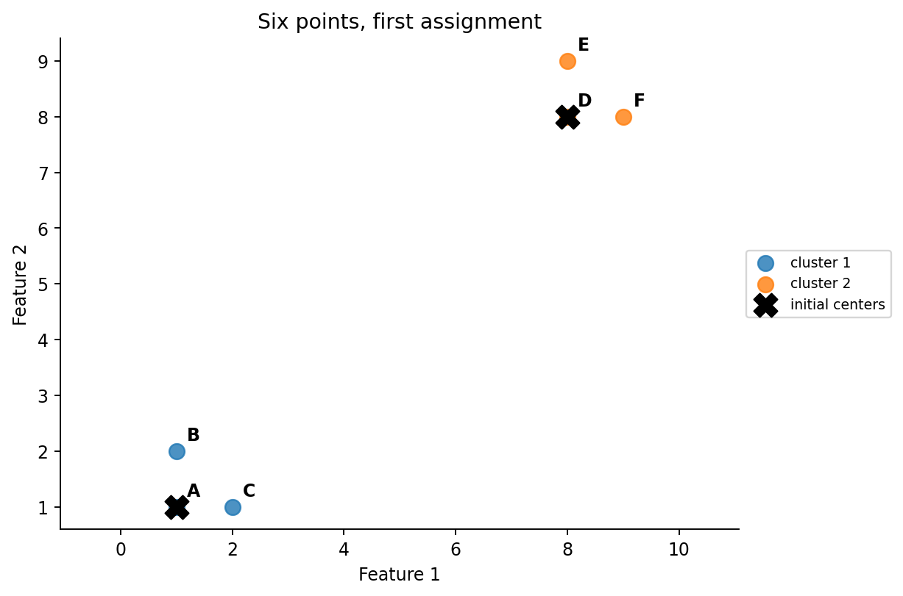
Fig. 112 شکل ۸ـ۴. نقطههای A تا F و دو مرکز اولیه. علامت ضربدر مرکز است و رنگ، انتساب به نزدیکترین مرکز را نشان میدهد.#
مرکز جدید میانگین حسابیِ اعضای همان گروه است:
بنابراین با محاسبهٔ مستقل هر مؤلفه به دست میآوریم:

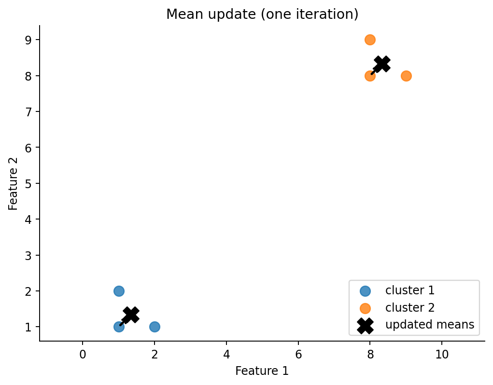
Fig. 113 شکل ۸ـ۵. حرکت مراکز از مکان اولیه به میانگین اعضا. این جابهجایی بخشی از بهینهسازی است، نه تغییر دادهٔ اصلی.#
۸ـ۴ـ۱. محاسبهٔ دستی SSE؛ چرا پاسخ دقیقاً ۸/۳ میشود؟#
تابع هدف k-means چنین است:
برای گروه اول، فاصلهٔ مربعشدهٔ A تا مرکز جدید \(2/9\) و فاصلهٔ مربعشدهٔ B و C هرکدام \(5/9\) است؛ مجموع \(12/9=4/3\) میشود. گروه دوم ساختاری همارز دارد و سهم آن نیز \(4/3\) است؛ پس مقدار کل SSE برابر \(8/3\approx2.667\) است. این مقدار را برنامهٔ chapter08_examples.py بدون تقریب اولیه تکرار میکند.
هر مرحلهٔ «انتساب به نزدیکترین مرکز» با مراکز ثابت، و هر مرحلهٔ «گرفتن میانگین» با عضویت ثابت، مقدار SSE را افزایش نمیدهد. پس الگوریتم لوید (Lloyd) تا حالت پایدار پیش میرود؛ اما تضمینی برای رسیدن به بهترین جواب سراسری ندارد و ممکن است در کمینهٔ محلی بماند.

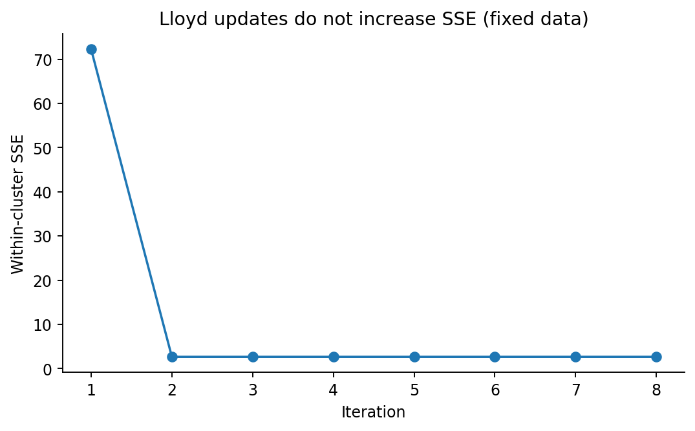
Fig. 114 شکل ۸ـ۶. مقدار SSE در تکرارهای یک اجرای مشخص روی شش نقطه؛ کاهش یا ثابتماندن تابع هدف بهمعنای کشف خوشهٔ واقعی نیست.#
۸ـ۵. شبهکد k-means و مسئلهٔ مقداردهی اولیه#
گامهای اصلی را بهصورت شبهکد بخوانید:
INPUT: X, k, initial centroids, stopping rule
REPEAT:
assign each point to the nearest centroid
replace each nonempty centroid by its members' mean
UNTIL assignments or objective stop changing sufficiently
OUTPUT: assignments, centroids, inertia
اگر خوشهای خالی شود، باید راهبرد مشخصی برای بازآغاز مرکز آن وجود داشته باشد؛ رفتار دقیق به پیادهسازی بستگی دارد. در دادههای بزرگ، نگهداری تمام فاصلهها نیز هزینه دارد. در هر تکرار ساده، محاسبهٔ فاصلهٔ \(n\) نمونه به \(k\) مرکز در \(d\) مؤلفه تقریباً مرتبهٔ \(O(nkd)\) دارد؛ تعداد تکرار و هزینهٔ مقداردهی اولیه هم باید لحاظ شود.
۸ـ۵ـ۱. چرا k-means++ بهتر از انتخاب بیفکرِ دو مرکز است؟#
در k-means++ پس از انتخاب مرکز اول، احتمال انتخاب هر نمونهٔ دیگر متناسب با مربع فاصلهٔ آن تا نزدیکترین مرکز انتخابشده است. اگر مرکز اول در مختصات \(0\) باشد و سه گزینه در فاصلههای \(1\)، \(5\) و \(6\) باشند، وزنها \(1\)، \(25\) و \(36\) و مجموع \(62\) خواهد بود. احتمال انتخاب دورترین گزینه \(36/62\) است؛ بااینحال نتیجه قطعی نیست و اجرای چند آغاز (n_init) همچنان مفید است.

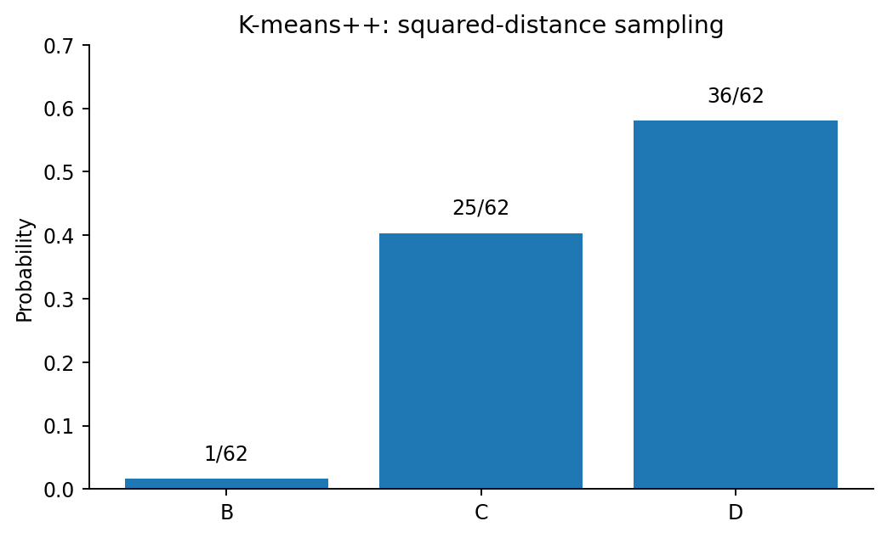
Fig. 115 شکل ۸ـ۷. احتمال نسبی مراکز دوم در انتخاب k-means++ روی یک مثال تکبعدی. دوری بیشتر به معنی احتمال بیشتر، نه انتخاب قطعی است.#
۸ـ۵ـ۲. نتیجهٔ اجرای واقعی روی دادهٔ فشرده#
در دادهٔ ساختگی compact، سه تودهٔ نقطهای با تعدادی نویز بیرونی قرار دارند. با k=3، مقدار ثابت random_state=824 و n_init=20 نتیجهٔ زیر به دست آمد: Silhouette برابر تقریباً ۰٫۷۷۱۳. این عدد متعلق به همین دادهٔ ساختگی و همین تنظیمات است و شاهدی دربارهٔ مشتریان واقعی محسوب نمیشود.

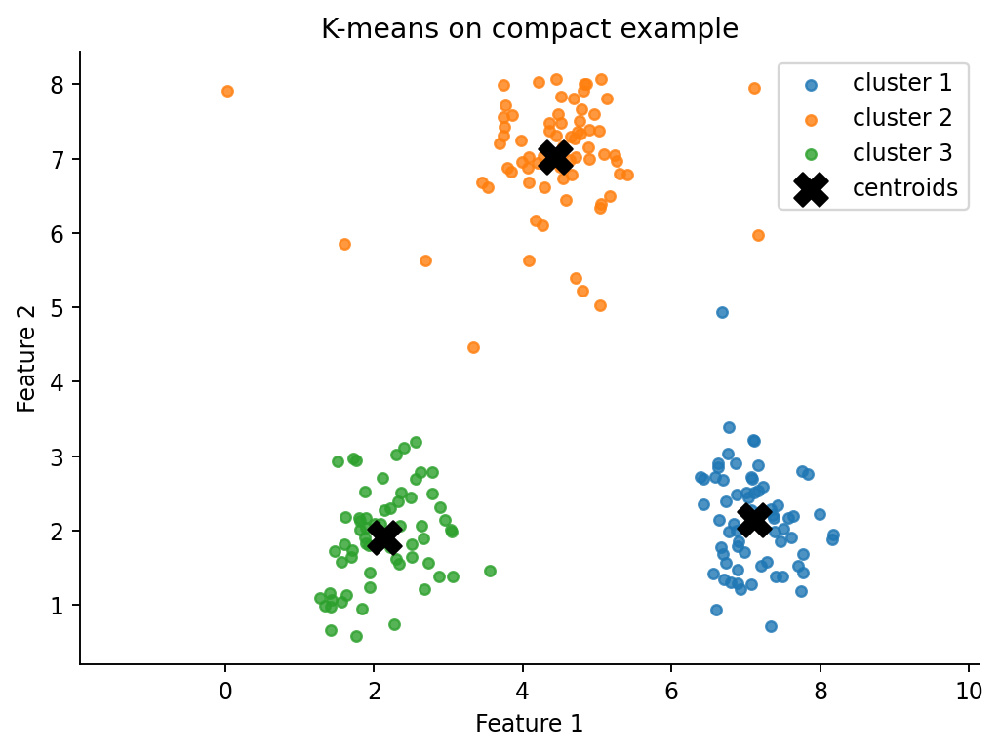
Fig. 116 شکل ۸ـ۸. نتیجهٔ k-means در دادهٔ فشرده، همراه با مراکز محاسبهشده؛ رنگ خوشه بهتنهایی نام یا معنای تجاری ندارد.#
۸ـ۶. انتخاب تعداد خوشهها: Elbow و نقش قضاوت علمی#
بهطور طبیعی، با افزایش \(k\)، SSE معمولاً کاهش مییابد؛ حتی با انتخاب \(k=n\) میتوان آن را برای دادههای متمایز به صفر رساند. پس انتخاب \(k\) براساس کمترین SSE ممکن بیمعناست. در روش زانویی (Elbow) به نقطهای نگاه میکنیم که ادامهٔ افزایش \(k\) بهبود نسبتاً کوچکی به همراه دارد. این نقطه ممکن است اصلاً واضح نباشد.

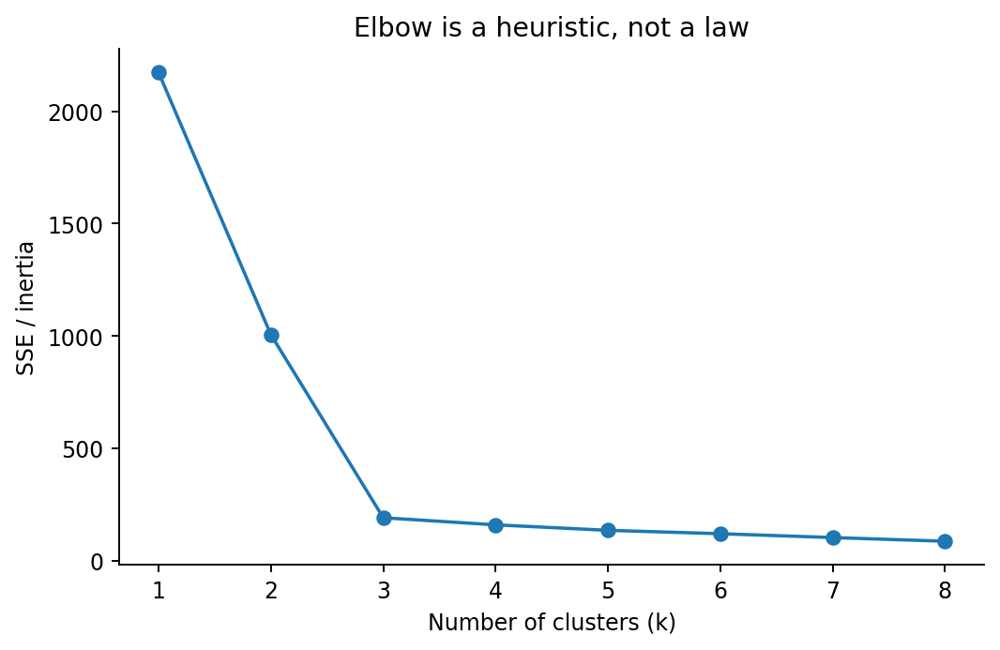
Fig. 117 شکل ۸ـ۹. SSE در برابر تعداد خوشه برای دادهٔ ساختگی. نمودار زانویی یک راهنمای اکتشافی است، نه آزمون اثبات وجود خوشه.#
روش دوم محاسبهٔ معیارهایی چون Silhouette برای چند مقدار \(k\) است. اما توجه کنید هیچ معیاری مستقل از هندسه و فاصله انتخابشده نیست. علاوه بر این، اگر \(k\) را با نگاهکردن به نتیجهٔ ارزیابی عوض کنیم، همان معیار در حکم معیار انتخاب پارامتر بوده و دیگر نباید «ارزیابی کاملاً مستقل» قلمداد شود.
۸ـ۷. نمایندهٔ خوشه: centroid در برابر medoid#
مرکز centroid میانگین اعضاست؛ ممکن است اصلاً یکی از نمونهها نباشد و به دادهٔ پرت حساس است. در مقابل، نمایندهٔ واقعی (medoid) یکی از نمونههای داخل مجموعه است که مجموع فاصلهاش تا سایر اعضا را کمینه میکند. این مفهوم با فاصلههای غیر اقلیدسی نیز قابل تعریف است. برای دادهٔ تکبعدی \(\{0,1,5\}\) و فاصلهٔ قدرمطلق، هزینهٔ نمایندهٔ ۰ برابر ۶، نمایندهٔ ۱ برابر ۵ و نمایندهٔ ۵ برابر ۹ است؛ پس نمونهٔ ۱ medoid است.
اگر دادهٔ \(\{1,2,2,3\}\) را به \(\{1,2,2,3,17\}\) تبدیل کنیم، میانگین از ۲ به ۵ میرود، اما میانه همان ۲ میماند. در یک خوشهٔ تکبعدی با فاصلهٔ قدرمطلق، medoid با کمینهکردن مجموع فاصلهها مرتبط با میانه است؛ این به معنی یکسانبودن کلی medoid و median در همهٔ فضاها نیست.

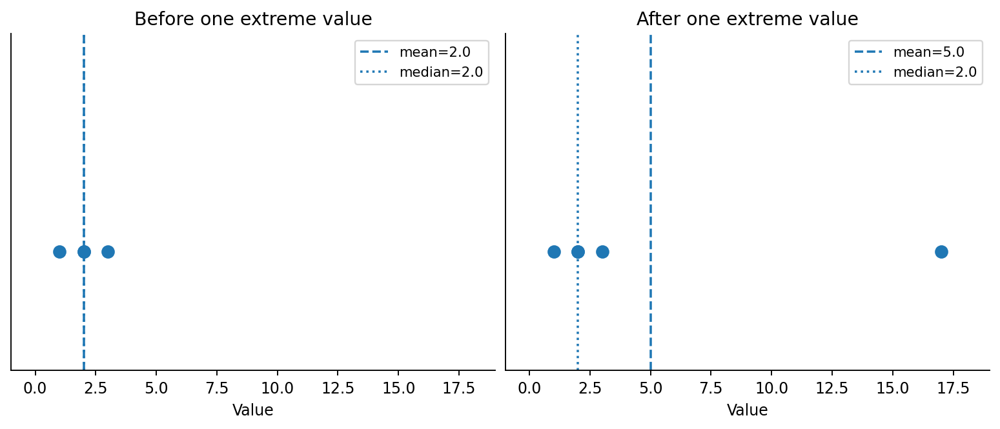
Fig. 118 شکل ۸ـ۱۰. اثر یک مقدار دورافتاده بر میانگین و میانه؛ انتخاب نماینده باید با نوع فاصله و مسئله سازگار باشد.#
در کد فصل، تابع k_medoids_exhaustive برای مثالهای بسیار کوچک همهٔ ترکیبها را میآزماید؛ این کد الگوریتم PAM بهینه برای دادهٔ بزرگ نیست و صرفاً تعریف دقیق هزینه را نشان میدهد.
۸ـ۸. چرا k-means روی شکل هلالی شکست میخورد؟#
برای دو هلال درهمرفته، هر هلال با خمیدگی خود گروه طبیعیِ هندسی محسوب میشود، اما خط مرز نزدیکترین مرکز معمولاً نمیتواند این خمیدگی را دنبال کند. از همین رو، k-means ممکن است هر هلال را ببرد و بخشهایی از دو هلال را در یک خوشه بگذارد. در این مسئله «تعداد خوشه» بهتنهایی کافی نیست؛ شکل خوشه نیز تعیینکننده است.

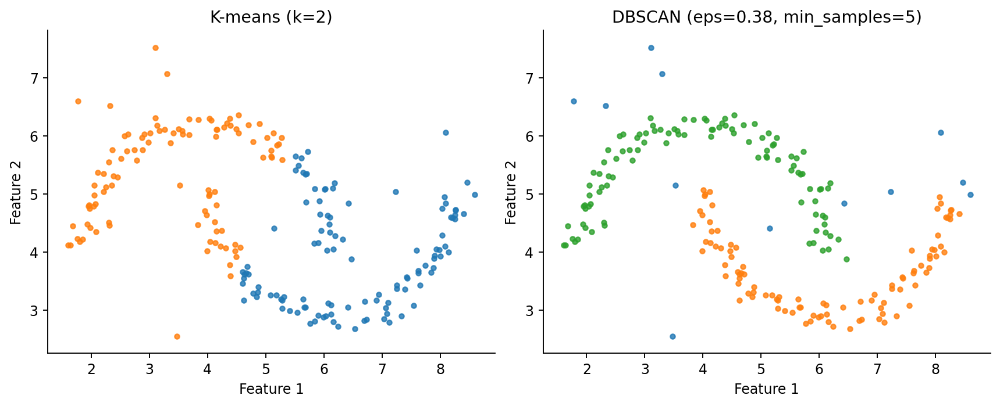
Fig. 119 شکل ۸ـ۱۱. مقایسهٔ k-means و DBSCAN روی نقاط هلالی. برچسب \(-1\) در روش دوم به معنی نویز است؛ دو روش تعریف متفاوتی از گروه دارند.#
این مثال به معنای برتری مطلق DBSCAN نیست. اگر چگالی دو هلال بسیار متفاوت، تعداد نمونهها اندک یا فاصلهٔ انتخابی نامناسب باشد، DBSCAN نیز ممکن است چند گروه را ادغام کند یا همهچیز را نویز تشخیص دهد.
۸ـ۹. خوشهبندی سلسلهمراتبی: از فاصلهٔ دو نمونه تا دندروگرام#
روش تجمیعی (Agglomerative) ابتدا هر مشاهده را یک خوشهٔ تکعضوی میداند؛ در هر مرحله دو خوشهٔ نزدیکتر را ادغام میکند تا به تعداد هدف یا یک ریشه برسد. خروجی را با یک دندروگرام (Dendrogram) نمایش میدهیم. ارتفاع هر ادغام به معیار پیوند (linkage) مربوط است؛ الزاماً فاصلهٔ اقلیدسی دو مرکز نیست.

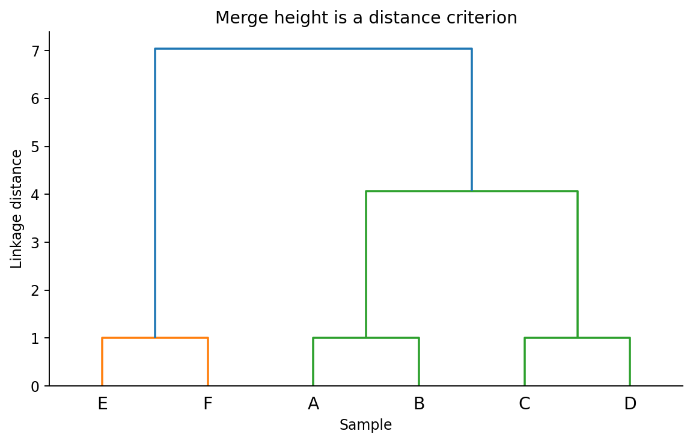
Fig. 120 شکل ۸ـ۱۲. نمونهٔ دندروگرام با پیوند میانگین؛ بریدن در یک ارتفاع، افرازهای متفاوتی ایجاد میکند.#
۸ـ۹ـ۱. سه تعریف اصلی فاصلهٔ خوشهها#
اگر \(A\) و \(B\) دو گروه و \(d(x,y)\) فاصلهٔ دو مشاهده باشد، سه تعریف رایج چنیناند:
مثلاً روی خط، چهار نقطهٔ \(A=0\)، \(B=1\)، \(C=4\) و \(D=10\) را در نظر بگیرید. ابتدا A و B با فاصلهٔ ۱ ادغام میشوند. اکنون فاصلهٔ گروه \(\{A,B\}\) تا C در سه روش بهترتیب ۳، ۴ و ۳٫۵ خواهد بود. بنابراین تفاوت روشها نه یک جزئیات نرمافزاری، بلکه تفاوت در تعریف فاصلهٔ دو گروه است.

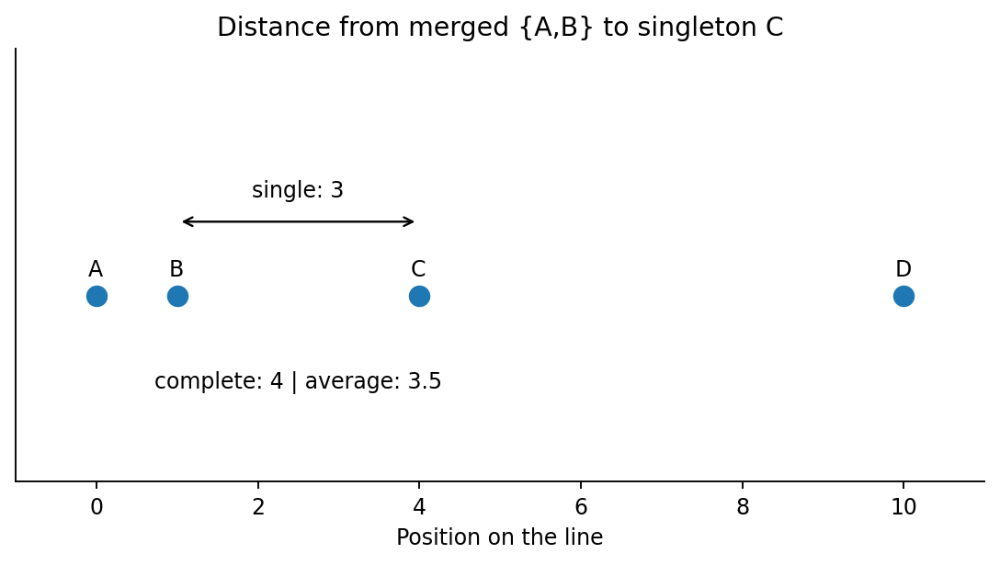
Fig. 121 شکل ۸ـ۱۳. مثال تکبعدی برای فهم Single، Complete و Average linkage. روش Single امکان زنجیرهشدن از مسیر نقاط واسط را بیشتر میکند.#
Ward linkage رویکردی متفاوت دارد: ادغامی را برمیگزیند که افزایش مجموع مربعات درونخوشهای کمینه شود؛ در کاربرد استاندارد آن، فاصلهٔ اقلیدسی و منطق واریانس درونی مهماند. ترکیب کورکورانهٔ Ward با هر ماتریس فاصلهٔ دلخواه از نظر علمی مجاز نیست. حافظه و زمان بسیاری از روشهای تجمیعی نیز برای دادهٔ بسیار بزرگ محدودیت ایجاد میکنند.
۸ـ۱۰. DBSCAN: نقطهٔ هسته، مرزی و نویز#
در DBSCAN دو پارامتر داریم: شعاع همسایگی \(\varepsilon\) و حداقل تعداد نمونهٔ همسایه min_samples یا MinPts. تعریف همسایگی را چنین مینویسیم:
در قراردادی که این فصل و کتابخانهٔ scikit-learn استفاده میکنند، خودِ نقطهٔ \(p\) نیز عضو همسایگی خودش است. اگر \(|N_{\varepsilon}(p)|\geq\mathrm{MinPts}\) باشد، p نقطهٔ هسته (core) است. نمونهٔ غیرهستهای که در همسایگی یک هسته قرار میگیرد مرزی (border) است. نمونهای که از این اتصالهای چگال بیرون بماند نویز (noise) تلقی میشود. نقاط مرزی ممکن است میان دو ناحیهٔ هستهای قرار بگیرند؛ ترتیب پیمایش و قرارداد پیادهسازی میتواند انتساب آنها را در برخی حالتها تحت تأثیر قرار دهد.
۸ـ۱۰ـ۱. شمارش دستی در یک خط#
پنج نقطهٔ \(\{0,1,2,5,8\}\) را با \(\varepsilon=1.1\) و \(\mathrm{MinPts}=3\) در نظر بگیرید. همسایگان نقطهٔ ۱ عبارتاند از ۰، ۱ و ۲؛ بنابراین ۱ هسته است. نقطهٔ ۰ فقط ۰ و ۱ را در همسایگی دارد و هسته نیست، اما به هستهٔ ۱ وصل است؛ پس مرزی است. نقطهٔ ۲ نیز مرزی است. نقاط ۵ و ۸ نه هستهاند و نه در همسایگی هسته؛ در نتیجه نویز هستند. خروجی محاسباتی متناظر در کد [0,0,0,-1,-1] است.

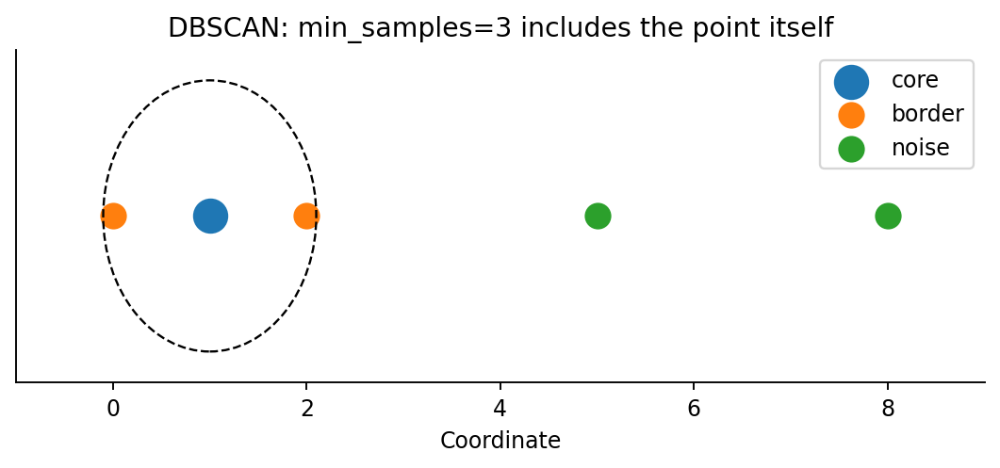
Fig. 122 شکل ۸ـ۱۴. مسئلهٔ تکبعدی DBSCAN با شعاع ۱٫۱. دایرهٔ خطچین حول نقطهٔ ۱ محدودهٔ همسایگی را نشان میدهد.#
۸ـ۱۰ـ۲. دسترسیپذیری چگال و شکل خوشه#
یک نقطهٔ هسته میتواند همسایگان خود را به گروه متصل کند، و این اتصال از طریق هستههای دیگر گسترش مییابد. به همین دلیل، مسیر خمیدهای از نقاط چگال میتواند یک گروه بسازد، حتی اگر میانگین مختصات آن بیرونِ نوار خمیده باشد. در عوض، دو نوار نزدیک و متصل از راه نقاط مرزی یا چگالیهای متفاوت ممکن است بهسادگی جدا نشوند.

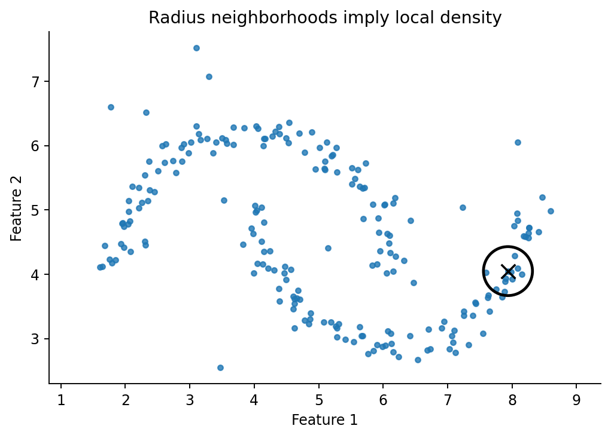
Fig. 123 شکل ۸ـ۱۵. یک همسایگی شعاعی روی دادهٔ هلالی. مفهوم هسته به تعداد نقاط در همین ناحیه و پارامتر MinPts وابسته است.#
۸ـ۱۱. چگونه eps و MinPts را انتخاب کنیم؟#
یک راه تجربی، رسم فاصلهٔ هر نمونه تا همسایهٔ \(k\)ام و مرتبکردن این فاصلههاست. اگر MinPts=5 و خود نقطه شمرده شود، فاصلهٔ پنجمِ گزارششده شامل همان قرارداد است. تغییر شدیدِ شیب منحنی ممکن است مرزی بین نواحی چگال و نقاط دورافتاده را پیشنهاد دهد، اما هیچ قانون جهانی برای تشخیص خودکار آن وجود ندارد.

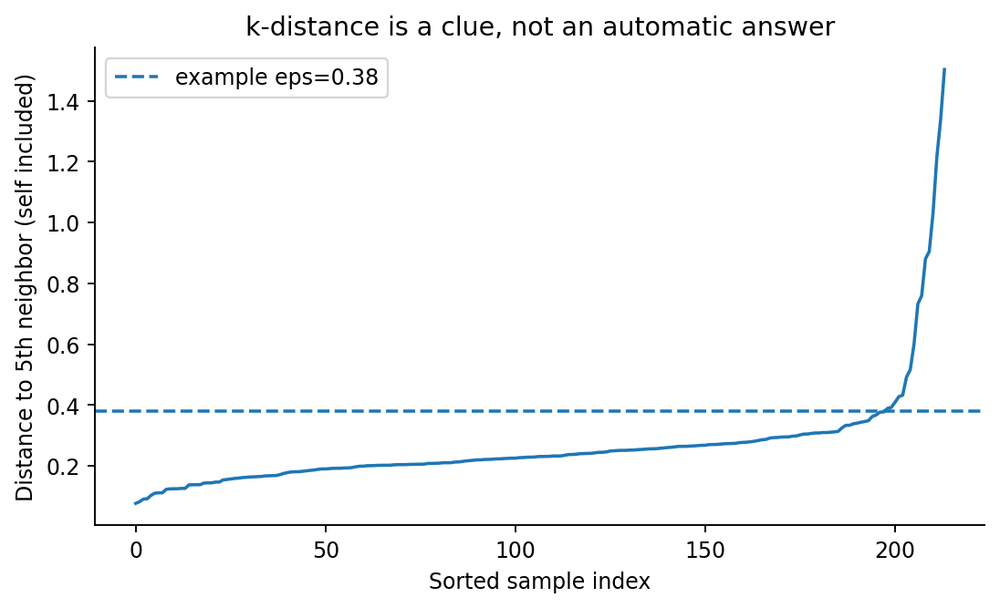
Fig. 124 شکل ۸ـ۱۶. نمودار فاصله تا همسایهٔ پنجم در دادهٔ هلالی، با خط افقی برای شعاع نمونه. خطچین فقط یک گزینهٔ آزمایشی است.#
با کوچککردن \(\varepsilon\)، ممکن است بسیاری از نقاط نویز شوند. با بزرگکردن بیش از حد آن، خوشهها به هم متصل میشوند. افزودن ویژگیهای جدید یا تغییر مقیاس نیز همهٔ همسایگیها را جابهجا میکند. بنابراین در گزارش نهایی باید شعاع، MinPts، معیار فاصله، مقیاسبندی و سهم نویز را صریحاً ذکر کنیم؛ وگرنه خوشهبندی قابل بازتولید نیست.
۸ـ۱۲. مقیاس ویژگیها: بازگشت ضروری به فصل سوم و چهارم#
فرض کنید یکی از ویژگیها در بازهٔ ۰ تا ۱ و دیگری در بازهٔ صفر تا ۱۰۰۰۰ باشد. اگر مقیاس تغییر نکند، فاصلهٔ اقلیدسی تقریباً تنها به ویژگی دوم حساس خواهد بود. استانداردسازی بهشکل زیر، هر مؤلفه را بر انحراف معیار همان مؤلفه تقسیم میکند:
این تبدیل فرض میکند نسبتدادن اهمیت مساوی به ویژگیهای استانداردشده قابل دفاع است. اگر یک ویژگی واقعاً مهمتر باشد یا داده پرت فراوان داشته باشد، استانداردسازی کورکورانه نیز مناسب نیست. در دادهٔ زمانی و دادهٔ دارای تقسیم آموزش/آزمون، پارامترهای تبدیل باید فقط از دادهٔ مجاز برآورد شوند.

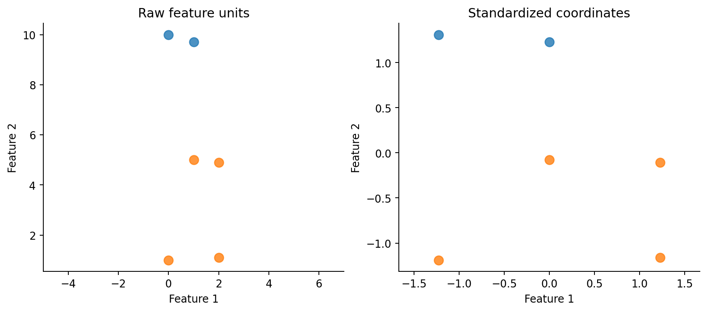
Fig. 125 شکل ۸ـ۱۷. همان شش مشاهده در واحد خام و پس از استانداردسازی. حتی اگر الگوریتم ثابت بماند، هندسه و انتساب ممکن است تغییر کند.#
برای ویژگی اسمی نباید بدون تعریف معنا کد عددی و فاصلهٔ اقلیدسی تحمیل کرد؛ برای دادهٔ مختلط میتوان از فاصلههای متناسب با نوع ویژگی مانند Gower استفاده کرد، اما سازگاری آنها با الگوریتم نیز باید جدا بررسی شود. برای دادهٔ خیلی تنک، Cosine میتواند از Euclidean معنادارتر باشد؛ در عین حال k-means استاندارد با مرکز میانگین و SSE اقلیدسی یکسان با هر انتخاب دلخواه فاصله نیست.
۸ـ۱۳. اعتبار خوشه: دو پرسش را از هم جدا کنیم#
پرسش اول: داده واقعاً تمایل به خوشهبندی دارد؟ پرسش دوم: اگر خوشهبندی را انجام دادیم، افراز بهدستآمده تحت تعریف خاصی چقدر منسجم است؟ پاسخ مثبت به سؤال دوم، لزوماً پاسخ مثبت به سؤال اول نیست. یک الگوریتم افرازی همیشه میتواند دادهٔ یکنواخت را به چند قسمت تقسیم کند.
در دادهٔ ساختگی uniform، که عمداً گروه طبیعی در آن قرار داده نشده است، الگوریتم k-means با \(k=3\) همچنان سه رنگ تولید میکند و مقدار Silhouette نزدیک ۰٫۴۶ به دست میآید. این یک شاهد آموزشی مهم است: عدد مثبت بهتنهایی گواه وجود سه خوشهٔ طبیعی نیست.

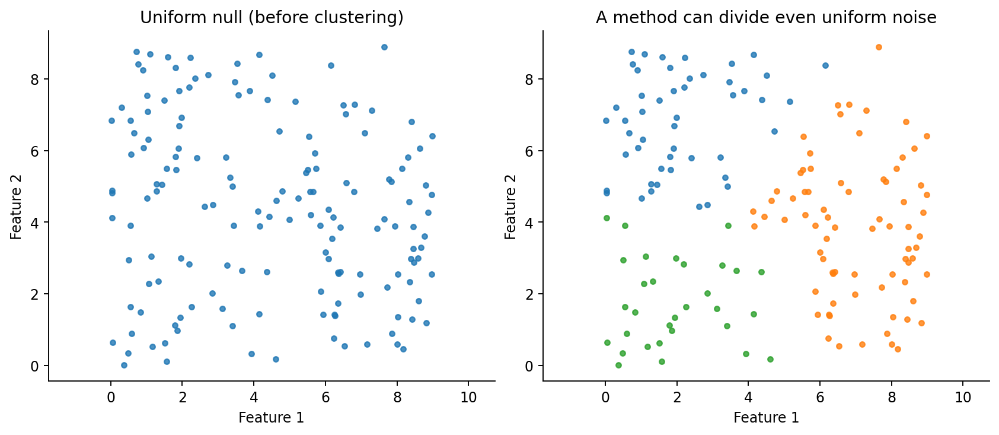
Fig. 126 شکل ۸ـ۱۸. همان دادهٔ یکنواخت پیش و پس از تحمیل سه مرکز. وجود سه رنگ در تصویر راست، ساختار واقعی جدیدی در داده خلق نکرده است.#
برای ارزیابی تمایل، میتوان از نمایش هندسی، مقایسه با دادهٔ مرجعِ بدون ساختار در همان فضای ویژگی، آزمونهای مبتنی بر فاصله و روشهایی مانند Hopkins استفاده کرد؛ هیچکدام مستقل از نمونهگیری و هندسهٔ مسئله نیستند. این فصل بهجای حفظ یک «آستانهٔ جادویی»، بر طراحی مبنای مقایسه (null reference) تأکید میکند.
۸ـ۱۴. Silhouette: یک مثال دستی با دو عدد#
برای مشاهدهٔ \(i\)، مقدار \(a(i)\) میانگین فاصلهٔ آن تا سایر اعضای همان خوشه و \(b(i)\) کمترین میانگین فاصلهٔ آن تا یکی از خوشههای دیگر است. سپس:
اگر \(a(i)=2\) و \(b(i)=6\)، آنگاه \(s(i)=(6-2)/6=2/3\) است؛ پس مشاهده بهطور متوسط به گروه خود نزدیکتر است. اگر \(a(i)=5\) و \(b(i)=3\)، مقدار \(-2/5\) میشود؛ این مشاهده در فاصلهٔ متوسط به گروه دیگری نزدیکتر است. برای خوشهٔ تکعضوی، قرارداد رایج در نرمافزارهایی مانند scikit-learn مقدار صفر است؛ این قرارداد را با فرمول میانگینگیری از یک مجموعهٔ تهی اشتباه نگیرید.
شرط اعتبار محاسبه: پس از کنارگذاشتن نویز، باید دستکم دو گروه و کمتر از تعداد نمونهها گروه داشته باشیم. محاسبهٔ Silhouette روی برچسب نویز بهعنوان «خوشهٔ معمولی» یا کنارگذاشتن بیسروصدای نویز میتواند نتیجه را عوض کند. کد فصل در گزارش DBSCAN سهم نویز کنارگذاشتهشده را ثبت میکند.

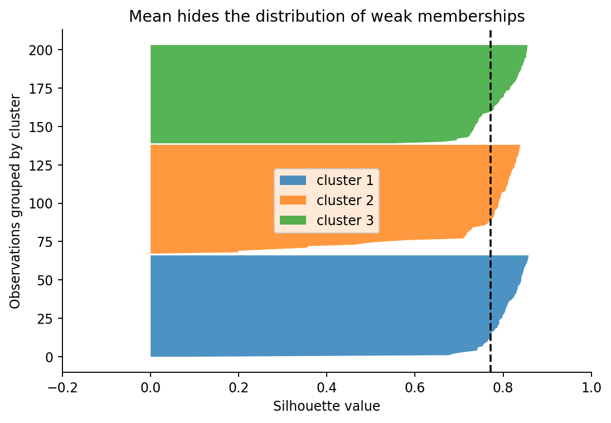
Fig. 127 شکل ۸ـ۱۹. توزیع Silhouette برای تکتک مشاهدههای دادهٔ فشرده. میانگین کلی نمیتواند همهٔ نمونههای مرزی را آشکار کند.#
۸ـ۱۵. اعتبار داخلی دیگر: Davies–Bouldin و محدودیت آن#
شاخص Davies–Bouldin بهصورت تقریبی میانگینی از بدترین نسبت «پراکندگی درونی دو خوشه» به «فاصلهٔ نمایندههای آنها» است. شکل متداول آن:
که \(S_i\) میزان پراکندگی خوشهٔ \(i\) و \(M_{ij}\) فاصلهٔ مراکز دو خوشه است. مقدار کوچکتر در این تعریف بهتر است؛ اما چنین شاخصی به ساختار مرکز-محور تمایل دارد و ممکن است دو هلال واقعی را کمتر از گروههای گرد ترجیح دهد. شاخص Calinski–Harabasz، نسبت پراکندگی بینگروهی به درونگروهی، نیز همین وابستگی به مدل هندسی و تعداد نمونهها را دارد. هیچ شاخص واحدی همهٔ کاربردها را رتبهبندی نمیکند.
۸ـ۱۶. ارزیابی خارجی: برچسبهای واقعی نباید در ساخت خوشه دخالت کنند#
گاهی برای ممیزی یک مجموعهٔ برچسب مستقل داریم؛ مثلاً گروههایی که با آزمایش مستقل تأیید شدهاند. در آن صورت میتوان از معیارهایی مانند Adjusted Rand Index یا ARI استفاده کرد. این معیار در برابر جابهجایی دلخواه شناسهٔ خوشهها مقاوم است؛ یعنی اگر برچسبهای 0 و 1 را به 9 و 4 تبدیل کنیم، ارزیابی تغییر نمیکند.
قاعدهٔ علمی: برچسب بیرونی فقط پس از ساخت خوشه برای ممیزی بهکار میرود؛ اگر همان برچسب در انتخاب فاصله یا پارامتر دخالت کند، ارزیابی دیگر کاملاً مستقل نیست. در دادهٔ ساختگی این فصل، ستون synthetic_group برای همین ممیزی نهایی نگه داشته شده و از ماتریس ورودی حذف میشود. اعداد آن را نمیتوان به یک مسئلهٔ واقعیِ بدون برچسب تعمیم داد.
۸ـ۱۷. پایداری و تکرارپذیری: نتیجهٔ یک بذر کافی نیست#
دو نوع پایداری داریم. پایداری به مقداردهی اولیه بررسی میکند آیا اجراهای مختلف یک الگوریتم روی همان داده نتیجهٔ مشابه میدهند. پایداری به نمونهگیری میپرسد اگر بخش کوچکی از داده تغییر کند، گروهها تا چه حد باقی میمانند. این دو مسئله متفاوتاند. نمونهبرداری مجدد با جایگذاری، برچسبهای مشاهدهها را تکرار میکند؛ برای مقایسهٔ منصفانه باید زیرمجموعهٔ مشترک مشاهدهها را شناسایی کنیم، نه آنکه برچسبهای دو نمونهٔ ناهماهنگ را ردیفبهردیف مقایسه کنیم.

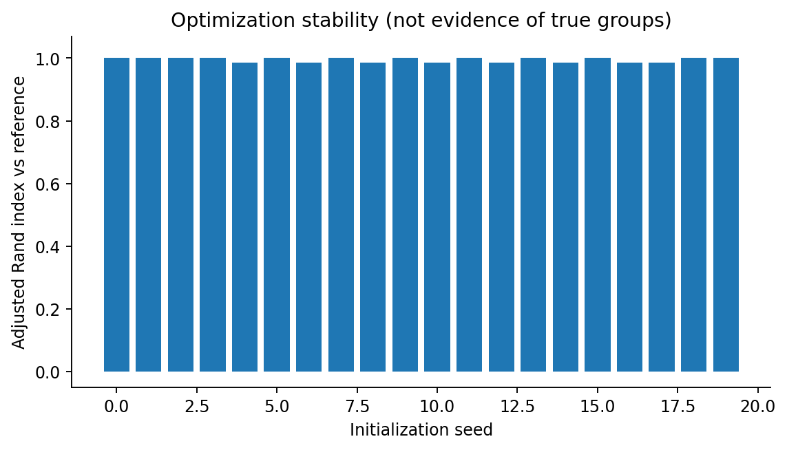
Fig. 128 شکل ۸ـ۲۰. همان دادهٔ فشرده با آغازهای مختلف k-means و معیار ARI نسبت به یک اجرای مرجع. پایداری به آغاز، اثبات وجود گروه واقعی نیست.#
در آزمایش این فصل، n_init=20 برای نتیجهٔ اصلی به کار رفته و برخی اجراهای مستقل با n_init=1 فقط برای بررسی حساسیتاند. اگر تحلیلگر فقط بهترین اجرای یک بذر خاص را نمایش دهد و دامنهٔ نوسان را پنهان کند، گزارش ناقص است.
۸ـ۱۸. تفسیر خوشهها: «نامگذاری» با «کشف» فرق دارد#
بعد از خوشهبندی ممکن است میانگین دو ویژگی در هر گروه را بررسی کنیم و آنها را «فعال»، «کمتردد» یا «پرهزینه» بنامیم. چنین نامگذاریای یک تفسیر پسینی است؛ از تابع هدف استخراج نمیشود و باید با معنای واقعی ویژگیها، نمونههای مرزی، پراکندگی درونگروهی و دانش حوزه بررسی شود. در دادهٔ ساختگی این فصل نامهای x1 و x2 عمداً خنثیاند تا از برچسبگذاریِ بیپشتوانه جلوگیری شود.

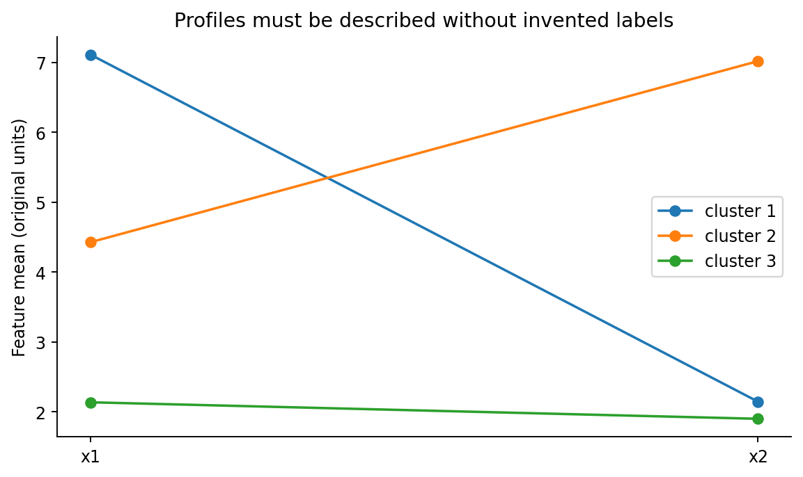
Fig. 129 شکل ۸ـ۲۱. میانگین ویژگیها برای سه خوشهٔ ساختهشده. اختلاف میانگینها بهخودیخود به معنی اختلاف ماهوی یا علی نیست.#
تفاوت متوسط یک ویژگی میان دو خوشه نمیگوید آن ویژگی «سبب» عضویت شده است؛ چهبسا همان ویژگی در تابع فاصله استفاده شده و تفاوت مشاهدهشده تا حدی حاصل روش خوشهبندی خود ما باشد. برای ادعای عملی باید اثر تصمیم در زمان آینده، محدودیت داده و امکان خطای گروهبندی را روشن کنیم.
۸ـ۱۹. یک آزمایش بازتولیدپذیر: از CSV تا مقایسهٔ سه هندسه#
فایل clustering_synthetic.csv شامل ۵۷۳ ردیف و ستونهای observation_id، dataset، x1، x2 و synthetic_group است. مجموعهها به ترتیب ۲۰۴ رکورد فشرده، ۲۱۴ رکورد هلالی و ۱۵۵ رکورد یکنواخت دارند. هر مشاهده یک شناسهٔ یکتا دارد و بذر تولید 824 است. تنها ستونهای x1 و x2 وارد الگوریتمها میشوند.
کد زیر نمونهٔ فشردهای از مسیر اجرا است:
from pathlib import Path
import pandas as pd
from sklearn.cluster import KMeans, DBSCAN
frame = pd.read_csv(Path('clustering_synthetic.csv'))
compact = frame.loc[frame['dataset'] == 'compact', ['x1', 'x2']]
moons = frame.loc[frame['dataset'] == 'moons', ['x1', 'x2']]
km = KMeans(n_clusters=3, random_state=824, n_init=20).fit(compact)
db = DBSCAN(eps=0.38, min_samples=5).fit(moons)
print('SSE:', km.inertia_)
print('DBSCAN noise:', (db.labels_ == -1).sum())
این مثال SSE را با k-means و نویز را با DBSCAN روی دو دادهٔ متفاوت گزارش میکند؛ مقایسهٔ عدد خام SSE میان آنها مجاز نیست. نتیجهٔ اجرای بسته برای دادهٔ هلالی، دو خوشه و ۱۲ نقطه با برچسب نویز است. نقطههای تزریقشدهٔ نویز الزاماً همان ۱۲ نمونهٔ تشخیصدادهشده نیستند: «نویز ساختهشده» و «نویز برچسبخورده توسط الگوریتم» دو مفهوم متفاوتاند.
برای تکرار کامل، از فایل requirements.txt، کد chapter08_examples.py، Notebook و آزمونهای test_chapter08_examples.py استفاده کنید. فایل example_results.json نسخهٔ ذخیرهشدهٔ نتایج همان نمونه است؛ در اجرای جدید اعداد باید با همان نسخههای وابستگی و بذر کنترل شوند. اگر در آینده الگوریتم یا نسخهٔ کتابخانه تغییر کند، باید تغییر در گزارش بازتولید ثبت شود.
۸ـ۲۰. راهنمای انتخاب روش؛ هیچ انتخابی بدون شرط معتبر نیست#
وضعیت داده/هدف |
انتخاب آغازین قابل بررسی |
شرط و احتیاط |
|---|---|---|
گروههای تقریباً فشرده با دادهٔ عددی |
|
نیاز به \(k\)، حساسیت به واحد و مقداردهی اولیه |
نیاز به دید سلسلهمراتبی و تعداد نمونهٔ متوسط |
Agglomerative |
تعریف linkage و هزینهٔ زمانی/حافظهای |
نواحی خمیده با نقاط کمتراکم جداکننده |
|
تنظیم \(\varepsilon\) و |
دادهٔ پرت فراوان یا فاصلهٔ غیراقلیدسی |
medoid-based |
هزینهٔ محاسباتی و نحوهٔ انتخاب نماینده |
دادهٔ بدون شواهد ساختار |
عدم گزارش خوشهٔ واقعی |
مقایسه با مدل مرجع و بررسی تمایل |
دادهٔ بسیار پُربعد، فازی، گرافی یا شبکهای |
فصل نهم |
نیازمند فرضهای دقیقتر و روشهای پیشرفته |
مقیاسپذیری: برای دادهٔ انبوه، راهبردهای mini-batch، نمونهگیری نماینده و روشهای مبتنی بر خلاصهسازی مطرحاند؛ ولی این فصل برای جلوگیری از سطحیشدن، بیشتر بر اعتبار تعریف خوشه تمرکز دارد. الگوریتمهایی مانند BIRCH و خوشهبندی طیفی را در فصل بعد با انگیزهٔ مشخص پی میگیریم.
۸ـ۲۱. تمرینها#
پرسشهای مفهومی#
۱. چرا نامیدن سه خروجی k-means به «سه تیپ واقعی مشتری» لزوماً مجاز نیست؟ دو شرط قابل بررسی پیشنهاد کنید.
۲. خوشهٔ فشرده، متصل و چگال را با مثالی توصیف کنید که این سه تعریف نتیجهٔ متفاوت میدهند.
۳. چرا synthetic_group نباید ورودی خوشهبندی مثال این فصل باشد؟
۴. یک دادهٔ یکنواخت رسم کنید. چرا k-means همچنان میتواند آن را به سه قسمت تقسیم کند؟
۵. فرق بین تمایل به خوشهبندی و کیفیت یک افرازِ ازپیشساخته را توضیح دهید.
۶. چرا مقایسهٔ SSE دادههای دارای مقیاس یا تعداد نمونهٔ متفاوت گمراهکننده است؟
مسائل محاسباتی#
۷. برای نقاط A تا F در بخش ۸ـ۴، فاصلهٔ مربعشدهٔ C تا هر دو مرکز اولیه را حساب کنید.
۸. مقدار \(4/3\) برای سهم SSE گروه اول را با جزئیات جمع سه جمله بازسازی کنید.
۹. برای یک اجرای k-means که مقدار SSE ابتدا ۳۰ و سپس ۱۶ شده، توضیح دهید کدام ادعا دربارهٔ بهینگی مجاز و کدام غیرمجاز است.
۱۰. در مثال k-means++، احتمال انتخاب گزینهٔ C با وزن ۲۵ از مجموع ۶۲ را حساب کنید.
۱۱. برای دادهٔ \(\{0,1,5\}\)، هر سه هزینهٔ ممکن medoid را با فاصلهٔ قدرمطلق به دست آورید.
۱۲. در مثال چهار نقطهٔ سلسلهمراتبی، فاصلهٔ گروه \(\{A,B\}\) تا C را به سه روش محاسبه کنید.
۱۳. با افزودن نقطهٔ \(2.05\) به مسئلهٔ DBSCAN تکبعدی، نقاط هسته و مرزی را دوباره شمارش کنید.
۱۴. برای \(a=2\) و \(b=6\) مقدار Silhouette و تفسیر آن را بنویسید.
۱۵. برای \(a=5\) و \(b=3\) مقدار Silhouette و یک دلیل احتمالی منفیشدن آن را بیان کنید.
۱۶. اگر در ارزیابی DBSCAN، تعداد ۱۰۰ مشاهده و ۲۰ نویز باشد، دو شیوهٔ متفاوت محاسبه/گزارش Silhouette را مقایسه کنید.
برنامهنویسی و تحلیل انتقادی#
۱۷. در CSV، سه مقدار \(k=2,3,4\) را با n_init=1 و n_init=20 مقایسه کنید. فقط SSE گزارش نکنید؛ حساسیت به آغاز را نیز بررسی کنید.
۱۸. روی دادهٔ هلالی \(\varepsilon\) را از ۰٫۲۵ تا ۰٫۶ تغییر دهید. تعداد خوشهها، تعداد نویز و سهم نویز را در هر مرحله گزارش کنید.
۱۹. در آزمایش سلسلهمراتبی، single، complete و average را روی یک دادهٔ باریک و کشیده مقایسه کنید.
۲۰. با StandardScaler دو ویژگی را استاندارد کنید. آیا انتساب k-means تغییر میکند؟ دلیل هندسی بیاورید.
۲۱. برای دادهٔ یکنواخت، Silhouette مثبت را محاسبه کنید. آیا میتوان از آن وجود گروه واقعی نتیجه گرفت؟ مقایسهٔ مناسبی پیشنهاد دهید.
۲۲. دو مقدار متفاوت min_samples را با شعاع یکسان در DBSCAN بررسی کنید. چه تغییری در تعداد نقاط هسته رخ میدهد؟
۲۳. از دادهٔ فشرده ۸۰٪ مشاهدهها را بدون جایگذاری انتخاب کنید و روی آنها خوشه بسازید. یک راه درست برای مقایسهٔ روی مشاهدات مشترک توضیح دهید.
۲۴. در مثالهای CSV، ستون synthetic_group را بهاشتباه همراه x1 و x2 کدگذاری و وارد مدل کنید؛ سپس توضیح دهید چرا این ارزیابی آلوده است. آن را در نتیجهٔ علمی نهایی استفاده نکنید.
۲۵. فرض کنید در دادهٔ واقعی نام یک ویژگی «هزینهٔ خرید» است. نشان دهید چرا اختلاف هزینهٔ متوسط میان خوشهها، شواهد علیت نیست.
۲۶. برای گروهبندی دادهٔ تراکنشیِ بسیار تنک، توضیح دهید چه اصلاحی در بازنمایی و معیار فاصله لازم است و چرا اجرای مستقیم k-means اقلیدسی شاید مناسب نباشد.
۸ـ۲۲. جمعبندی و پل به فصل نهم#
در این فصل دیدیم که خوشهبندی نه برچسب واقعی تولید میکند و نه بهخودیخود کشف علمی را اثبات میکند؛ بلکه یک ساختار پیشنهادی تحت انتخابهای صریح تحلیلگر میسازد. k-means برای فشردگی حول میانگین تعریف دقیقی دارد؛ پیوندهای سلسلهمراتبی مفهوم فاصلهٔ دو گروه را تغییر میدهند؛ و DBSCAN برای نواحی چگال و نویز مناسب است، به شرط آنکه پارامترها و فاصله گزارش شوند. اعتبار داخلی، تمایل به خوشهبندی، پایداری و ممیزی خارجی هرکدام پرسش متفاوتی پاسخ میدهند.
فصل نهم از همین محدودیتها شروع میکند: وقتی خوشهها همپوشان، فازی، با شکل پیچیده، در ابعاد بسیار بالا یا روی گراف باشند، مدلهای احتمالاتی، فازی، طیفی، زیرفضایی و روشهای مخصوص ساختار شبکه را بررسی میکنیم. معیار موفقیت در همهٔ آنها همچنان تناسب با مسئله و شواهد قابل ارزیابی خواهد بود.
۸ـ۲۳. منابع و بازتولید#
۱. Han, J., Pei, J., & Tong, H. Data Mining: Concepts and Techniques, 4th ed., Elsevier, 2023. Chapter 8, Sections 8.1–8.5, printed pp. 379–424.
۲. Tan, P.-N., Steinbach, M., Karpatne, A., & Kumar, V. Introduction to Data Mining, 2nd ed., Pearson, 2019. Chapter 7, Sections 7.1–7.5, printed pp. 525–596.
۳. فایلهای تألیفی همین فصل: chapter08_examples.py، chapter08_examples.ipynb، clustering_synthetic.csv، example_results.json، test_chapter08_examples.py و ۲۱ شکل اختصاصی. داده و نمودارها بازتولید آموزشیاند و هیچ ادعایی دربارهٔ وضعیت مشتریان واقعی ندارند.
راهنمای اجرا: در پوشهٔ دانلودها ابتدا python -m pip install -r requirements.txt و سپس python chapter08_examples.py را اجرا کنید. برای آزمونها python -m unittest -v test_chapter08_examples.py و برای Notebook سلولها را بهترتیب اجرا کنید. اگر میخواهید فقط PDF را بخوانید، نصب Python لازم نیست؛ اگر میخواهید شکلها و محاسبات را بازتولید کنید، همهٔ ورودیها در بسته وجود دارند.